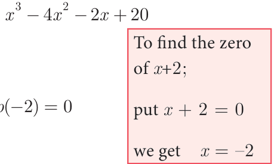
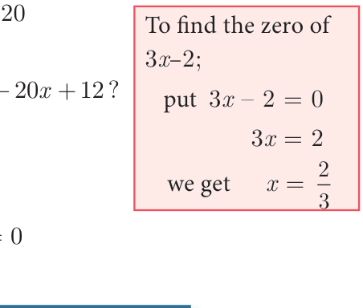

In this section , we shall study a simple and an elegant method of finding the remainder. In the case of divisibility of a polynomial by a linear polynomial we use a well known theorem called Remainder Theorem.

Significance of Remainder theorem : It enables us to find the remainder without actually following the cumbersome process of long division.

Note
- If \(p(x)\) is divided by \((x + a)\), then the remainder is \(p(-a)\)
- If \(p(x)\) is divided by \((ax - b)\), then the remainder is \(p\left(\frac{b}{a}\right)\)
- If \(p(x)\) is divided by \((ax + b)\), then the remainder is \(p\left(-\frac{b}{a}\right)\)

Example 3.12 Without actual division, prove that \(f(x) = 2x^4 - 6x^3 + 3x^2 + 3x - 2\) is exactly divisible by \(x^2 - 3x + 2\)
Solution :
Let \(f(x) = 2x^4 - 6x^3 + 3x^2 + 3x - 2\)
\(g(x) = x^2 - 3x + 2\)
\(= x^2 - 2x - x + 2\)
\(= x(x - 2) - 1(x - 2)\)
\(= (x - 2)(x - 1)\)
we show that \(f(x)\) is exactly divisible by \((x - 1)\) and \((x - 2)\) using remainder theorem
\(f(1) = 2(1)^4 - 6(1)^3 + 3(1)^2 + 3(1) - 2\)
\(= 2 - 6 + 3 + 3 - 2\)
\(= 0\)
\(f(2) = 2(2)^4 - 6(2)^3 + 3(2)^2 + 3(2) - 2\)
\(= 32 - 48 + 12 + 6 - 2\)
\(= 0\)
\(\therefore\) \(f(x)\) is exactly divisible by \((x - 1)(x - 2)\)
i.e., \(f(x)\) is exactly divisible by \(x^2 - 3x + 2\)
If \(p(x)\) is divided by \((x - a)\) with the remainder \(p(a) = 0\), then \((x - a)\) is a factor of \(p(x)\). Remainder Theorem leads to Factor Theorem.
3.3.1 Factor Theorem
If \(p(x)\) is a polynomial of degree \(n \ge 1\) and ‘\(a\)’ is any real number then
- \(p(a) = 0\) implies \((x - a)\) is a factor of \(p(x)\).
- \((x - a)\) is a factor of \(p(x)\) implies \(p(a) = 0\).
Proof
If \(p(x)\) is the dividend and \((x - a)\) is a divisor, then by division algorithm we write, \(p(x) = (x - a)q(x) + p(a)\) where \(q(x)\) is the quotient and \(p(a)\) is the remainder.
- If \(p(a) = 0\), we get \(p(x) = (x - a)q(x)\) which shows that \((x - a)\) is a factor of \(p(x)\).
- Since \((x - a)\) is a factor of \(p(x)\), \(p(x) = (x - a)g(x)\) for some polynomial \(g(x)\). In this case
\(p(a) = (a - a)g(a)\)
\(= 0 \times g(a)\)
\(= 0\)
Hence, \(p(a) = 0\), when \((x - a)\) is a factor of \(p(x)\).

Note
- \((x - a)\) is a factor of \(p(x)\), if \(p(a) = 0\) \(\quad (\because x - a = 0,\ x = a)\)
- \((x + a)\) is a factor of \(p(x)\), if \(p(-a) = 0\) \(\quad (\because x + a = 0,\ x = -a)\)
- \((ax + b)\) is a factor of \(p(x)\), if \(p\left(-\frac{b}{a}\right) = 0\) \(\quad \left(\because ax + b = 0,\ ax = -b,\ x = -\frac{b}{a}\right)\)
- \((ax - b)\) is a factor of \(p(x)\), if \(p\left(\frac{b}{a}\right) = 0\) \(\quad \left(\because ax - b = 0,\ ax = b,\ x = \frac{b}{a}\right)\)
- \((x - a)(x - b)\) is a factor of \(p(x)\), if \(p(a) = 0\) and \(p(b) = 0\) \(\quad \left(\because \begin{array}{l} x - a = 0 \text{ or } x - b = 0 \\ x = a \text{ or } x = b \end{array}\right)\)
Example 3.13 Show that \((x + 2)\) is a factor of \(x^3 - 4x^2 - 2x + 20\)

Solution
Let \(p(x) = x^3 - 4x^2 - 2x + 20\)
By factor theorem, \((x + 2)\) is factor of \(p(x)\), if \(p(-2) = 0\)
\(p(-2) = (-2)^3 - 4(-2)^2 - 2(-2) + 20\)
\(= -8 - 4(4) + 4 + 20\)
\(p(-2) = 0\)
Therefore, \((x + 2)\) is a factor of \(x^3 - 4x^2 - 2x + 20\)
Example 3.14 Is \((3x - 2)\) a factor of \(3x^3 + x^2 - 20x + 12\)?

Solution
Let \(p(x) = 3x^3 + x^2 - 20x + 12\)
By factor theorem, \((3x - 2)\) is a factor, if \(p\left(\frac{2}{3}\right) = 0\)
\(p\left(\frac{2}{3}\right) = 3\left(\frac{2}{3}\right)^3 + \left(\frac{2}{3}\right)^2 - 20\left(\frac{2}{3}\right) + 12\)
\(= 3\left(\frac{8}{27}\right) + \left(\frac{4}{9}\right) - 20\left(\frac{2}{3}\right) + 12\)
\(= \frac{8}{9} + \frac{4}{9} - \frac{120}{9} + \frac{108}{9}\)
\(p\left(\frac{2}{3}\right) = \frac{(120 - 120)}{9}\)
\(= 0\)
Therefore, \((3x - 2)\) is a factor of \(3x^3 + x^2 - 20x + 12\)
Progress Check
- \((x + 3)\) is a factor of \(p(x)\), if \(p(\underline{\qquad}) = 0\)
- \((3 - x)\) is a factor of \(p(x)\), if \(p(\underline{\qquad}) = 0\)
- \((y - 3)\) is a factor of \(p(y)\), if \(p(\underline{\qquad}) = 0\)
- \((-x - b)\) is a factor of \(p(x)\), if \(p(\underline{\qquad}) = 0\)
- \((-x + b)\) is a factor of \(p(x)\), if \(p(\underline{\qquad}) = 0\)
Example 3.15 Find the value of \(m\), if \((x - 2)\) is a factor of the polynomial \(2x^3 - 6x^2 + mx + 4\).
Solution

Let \(p(x) = 2x^3 - 6x^2 + mx + 4\)
By factor theorem, \((x - 2)\) is a factor of \(p(x)\), if \(p(2) = 0\)
\(p(2) = 0\)
\(2(2)^3 - 6(2)^2 + m(2) + 4 = 0\)
\(2(8) - 6(4) + 2m + 4 = 0\)
\(-4 + 2m = 0\)
\(m = 2\)